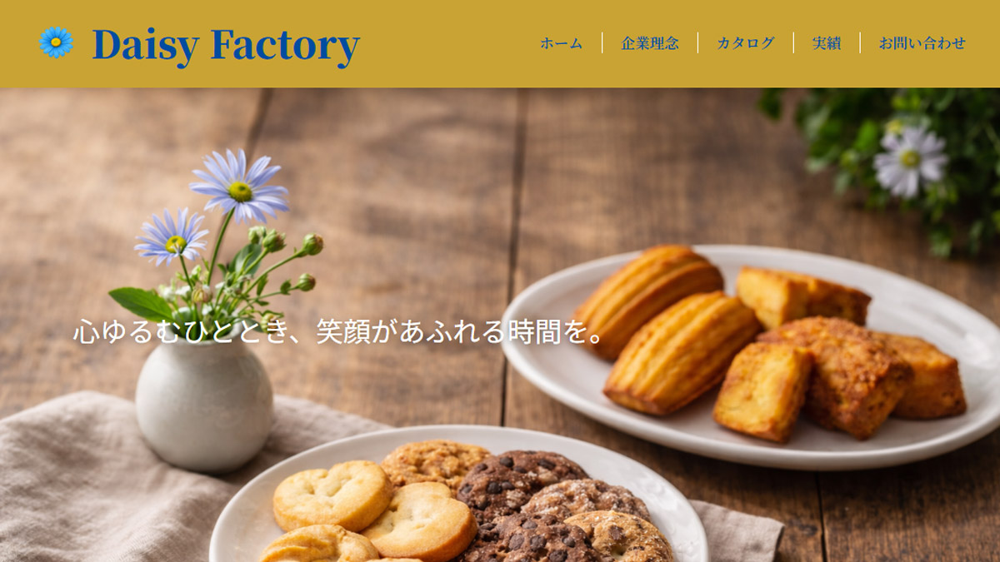

Web Site
Daisy Factory
Daisy Factoryは「BtoB向け焼き菓子メーカー」の架空コーポレートサイトとして設計。

概要
Daisy Factoryは、カフェや雑貨店、ホテルなどの法人向けに焼き菓子を提供する架空のBtoB焼き菓子メーカーサイトです。 「心ゆるむひととき」をコンセプトに、商品そのものだけでなく、焼き菓子が届く空間や時間の価値が伝わるサイトを目指しました。
担当範囲
- 企画
- 構成
- デザイン
- コーディング
使用ツール・言語
- HTML / CSS
- Figma
制作意図
法人担当者が安心して問い合わせできるよう、清潔感と信頼感のある配色・余白設計を意識しました。 また、青いデイジーをブランドモチーフとして使用し、焼き菓子メーカーらしいやさしさと、 BtoBサイトとしての落ち着きを両立させています。
工夫した点
企業理念、商品紹介、導入イメージ、問い合わせ導線を整理し、 初めてサイトを訪れた法人担当者がサービス内容を理解しやすい構成にしました。 コンバージョンとして「お問い合わせ」「カタログ請求」「導入事例」の導線を意識しています。